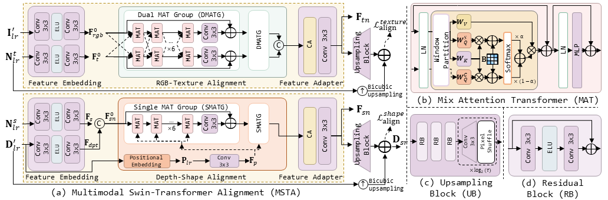

Efficient 3D Surface Super-resolution via Normal-based Multimodal Restoration
Miaohui Wang et al.
Will update the details of this work soon...
Abstract
High-fidelity 3D surface is essential for vision tasks across various domains such as medical imaging, cultural heritage preservation, quality inspection, virtual reality, and autonomous navigation. However, the intricate nature of 3D data representations poses significant challenges in restoring diverse 3D surfaces while capturing fine-grained geometric details at a low cost. This paper introduces an efficient multimodal normal-based 3D surface super-resolution (mn3DSSR) framework, designed to address the challenges of microgeometry enhancement and computational overhead. Specifically, we have constructed one of the largest photometric stereo dataset, ensuring superior data quality and diversity through meticulous subjective selection. Furthermore, we explore a new two-branch multimodal alignment approach along with a multimodal split fusion module to mitigate computational complexity while improving restoration performance. To address the limitations associated with normal-based multimodal learning, we develop novel normal-induced loss functions that facilitate geometric consistency and improve feature alignment. Extensive experiments conducted on seven benchmark datasets across four different 3D data representations demonstrate that mn3DSSR consistently outperforms state-of-the-art super-resolution methods in terms of restoration accuracy with high computational efficiency.
Download
[Gourd&Apple Dataset]
[Harvard Dataset]
[DiLiGenT10^2 Dataset]
[DiLiGenT Dataset]
[LUCES Dataset]
[WPS Dataset]
[Proposed Multimodal Normal-based WPS+ Dataset]
[Source Code]
Proposed mn3DSSR method
A. Multimodal Pre-processing Stage (MPS)
MPS performs necessary feature transformation on the raw multimodal data, addressing two main issues: (1) normalizing the input to minimize variations and distribution differences across modalities from various sources, and (2) constructing primary features for the alignment module, generating shape and texture features.
Fig. 1: Multimodal Pre-processing Stage (MPS). Three modalities are pre-processed to generate primary features for subsequent alignment and fusion.
B. Multimodal Swin-Transformer Alignment (MSTA)
To align the previously processed I′_lr and D′_lr, we propose a new two-branch multimodal Swin-Transformer alignment (MSTA) module, consisting of a RGB-texture alignment branch and a depth-shape alignment branch. Specifically, our objective is primarily to enhance the texture normal information by aligning I′_lr with N^t_lr in the RGB-texture branch. Simultaneously, we inject the global 3D geometric information into the shape normal by aligning D′_lr with N^s_lr in the depth-shape branch.

Fig. 2: Illustration of the proposed MSTA module. (a) Multimodal Swin-Transformer Alignment (MSTA): RGB and depth features are separately aligned through the embedding alignment-adaptation paradigm. (b) Mix Attention Transformer (MAT): The Swin Transformer is extended to combine cross attention and self-attention. (c) Upsampling Block. (d) Residual Block.
C. Multimodal Split Fusion (MSF)
After processing the side-modality features in the MSTA module, Ftn and Fsn are further fused into the normal modality to assist in super-resolution feature extraction. In our previous method [11], a fusion module has been developed based on a spatial feature transform to modulate side-modalities. However, this approach often neglects dynamic changes in the main normal branch and struggles to adapt to the distinct characteristics of texture and shape normal features. To address this limitation, we propose a multimodal split fusion (MSF) module that integrates texture and shape normal features.
Fig. 3: Multimodal Split Fusion (MSF). A texture enhancer and a shape enhancer are tailored to split and enhance the texture and shape features of F^l_sr. These enhanced components are fused with the enhanced F_tn and F_sn, respectively. Subsequently, the fused texture and shape components (i.e., F^l_texture and F^l_shape) are recombined through the texture-shape fusion module.

Fig. 4: Illustration of partial samples from our wonderful photometric stereo plus (WPS+) dataset. WPS+ consists of a variety of surface materials such as flat, rough, and bumpy textures.
D. Proposed normal-based dataset
Several normal-based datasets have been established for 3D surface processing. Nonetheless, we continue to face the following fundamental challenges in training our mn3DSSR model: (i) a notable scarcity of diverse 3D surface shape datasets, particularly within open-source repositories; (ii) significant difficulties in obtaining high-quality normal maps and corresponding multimodal data that represent fine-grained surface details and complex geometries; and (iii) the limited scale of existing high-quality normal datasets, which is typically insufficient in size to support the training of robust deep super-resolution models.
To address these challenges, we propose to establish a dedicated and large-scale normal-based multimodal dataset acquired using photometric stereo setups. The essential motivation lies in the fact that photometric stereo is typically more accurate for computing surface normals than other methods based on single image prediction, such as shape-from-shading or deep learning models. Fig. 1 shows typical samples from our dataset. The normal modality N_gt provides fine-grained geometry information. Meanwhile, the depth modality D_gt provides a continuous 3D surface constraint. In contrast, the RGB modality I_gt contains 18 images captured under diverse calibrated lightings, which represents complex texture and material features that provide rich visual cues for multimodal surface processing.
Compared to our previous wonderful photometric stereo (WPS) dataset, we summarize six main improvements in WPS+ as follows.
1) We have re-captured low-quality samples from WPS to improve the overall data quality.
2) WPS captures RGB images through the camera sensor without Gamma correction, leading to inaccurate normal acquisition. In contrast, WPS+ has addressed this issue by applying Gamma correction before obtaining surface normal maps.
3) To synthesize the best normal maps, we have adopted three different photometric stereo-based methods [39], [40], and [41], which have enhanced the overall quality of 3D surface reconstruction. In contrast, WPS relies on one least square based Lambertian method [42].
4) We have invited three professionals to carefully evaluate and select the best 3D reconstruction results, investing over 1,000 hours to ensure high-quality samples.
5) To better represent diverse surface shapes, we have greatly expanded the number of dataset samples, now including 600 objects in WPS+ compared to 400 objects in WPS.
6) After improving data quality, we have scaled the WPS+ dataset by a larger magnification to obtain a more comprehensive super-resolution dataset, including the ×2, ×4, and ×8 sampling settings.
Fig. 5: (a) Dataset Acquisition Setup: Our photometric stereo device consisting of industrial camera and LED lights. (b) Dataset Enhancement: Several enhancements have been made to the WPS dataset, resulting in the higher quality of the WPS+.
References
[Qian2021CVPR] G. Qian, A. Abualshour, G. Li, A. Thabet, and B. Ghanem, “Pu-gcn: Point Cloud Upsampling Using Graph Convolutional Networks,” in IEEE Conference on Computer Vision and Pattern Recognition (CVPR), 2021, pp. 11 683–11 692. [ paper, implementation ]
[Feng2022CVPR] W. Feng, J. Li, H. Cai, X. Luo, and J. Zhang, “Neural Points: Point Cloud Representation with Neural Fields for Arbitrary Upsampling,” in IEEE Conference on Computer Vision and Pattern Recognition (CVPR), 2022, pp. 18 633–18 642. [ paper, implementation ]
[He2023CVPR] Y. He, D. Tang, Y. Zhang, X. Xue, and Y. Fu, “Grad-PU: Arbitrary-Scale Point Cloud Upsampling via Gradient Descent with Learned Distance Functions,” in IEEE Conference on Computer Vision and Pattern Recognition (CVPR), 2023, pp. 5354–5363. [ paper, implementation ]
[Loop2008TOG] C. Loop and S. Schaefer, “Approximating Catmull-Clark Subdivision Surfaces with Bicubic Patches,” ACM Transactions on Graphics, vol. 27, no. 1, pp. 1–11, 2008. [ paper, implementation ]
[Liu2020TOG] H.-T. D. Liu, V. G. Kim, S. Chaudhuri, N. Aigerman, and A. Jacobson, “Neural subdivision,” ACM Transactions on Graphics, vol. 39, no. 2, pp. 10–16, 2020. [ paper, implementation ]
[Shim2023CVPR] J. Shim, C. Kang, and K. Joo, “Diffusion-Based Signed Distance Fields for 3D Shape Generation,” in IEEE Conference on Computer Vision and Pattern Recognition (CVPR), 2023, pp. 20 887–20 897. [ paper, implementation ]
[Voynov2019ICCV] O. Voynov, A. Artemov, V. Egiazarian, A. Notchenko, G. Bobrovskikh, E. Burnaev, and D. Zorin, “Perceptual Deep Depth Super-Resolution,” in IEEE International Conference on Computer Vision (ICCV), 2019, pp. 5653–5663. [ paper, implementation ]
[Deng2021TPAMI] X. Deng and P. L. Dragotti, “Deep Convolutional Neural Network for Multi-Modal Image Restoration and Fusion,” IEEE Transactions on Pattern Analysis and Machine Intelligence, vol. 43, no. 10,pp.3333–3348, 2021. [ paper, implementation ]
[Zhao2022CVPR] Z. Zhao, J. Zhang, S. Xu, Z. Lin, and H. Pfister, “Discrete Cosine Transform Network for Guided Depth Map Super-Resolution,” in IEEE Conference on Computer Vision and Pattern Recognition (CVPR), 2022, pp. 5697–5707. [ paper, implementation ]
[Metzger2023CVPR] N. Metzger, R. C. Daudt, and K. Schindler, “Guided Depth Super- Resolution by Deep Anisotropic Diffusion,” in IEEE Conference on Computer Vision and Pattern Recognition (CVPR), 2023, pp. 18 237– 18 246. [ paper, implementation ]
[Ju2022IJCV] Y. Ju, B. Shi, M. Jian, L. Qi, J. Dong, and K.-M. Lam, “NormAttention-PSN: A High-frequency Region Enhanced Photometric Stereo Network with Normalized Attention,” Springer International Journal of Computer Vision, vol. 130, no. 12, pp. 3014– 3034, 2022. [ paper, implementation ]
[Xie2022CVPR] W. Xie, T. Huang, and M. Wang, “MNSRNet: Multimodal Transformer Network for 3D Surface Super-Resolution,” in IEEE Conference on Computer Vision and Pattern Recognition (CVPR), 2022, pp. 12 703–12 712. [ paper, implementation ]
[Xie2023IJCAI] W. Xie, T. Huang, and M. Wang, “3D Surface Super-resolution from Enhanced 2D Normal Images: A Multimodal-driven Variational AutoEncoder Approach,” in International Joint Conference on Artificial Intelligence (IJCAI), 2023, pp. 1578–1586. [ paper, implementation ]
[Dong2016TPAMI] C. Dong, C. C. Loy, K. He, and X. Tang, “Image Super-Resolution Using Deep Convolutional Networks,” IEEE Transactions on Pattern Analysis and Machine Intelligence, vol. 38, no. 2, pp. 295–307, 2015. [ paper, implementation ]
[Zhang2018ECCV] Y. Zhang, K. Li, K. Li, L. Wang, B. Zhong, and Y. Fu, “Image Super-Resolution Using very Deep Residual Channel Attention Networks,” in European Conference on Computer Vision (ECCV), 2018, pp. 286–301. [ paper, implementation ]
[Zhang2021TPAMI] Y. Zhang, Y. Tian, Y. Kong, B. Zhong, and Y. Fu, “Residual Dense Network for Image Restoration,” IEEE Transactions on Pattern Analysis and Machine Intelligence, vol. 43, no. 7, pp. 2480–2495, 2021. [ paper, implementation ]
[Chen2021CVPR] H. Chen, Y. Wang, T. Guo, C. Xu, Y. Deng, Z. Liu, S. Ma, C. Xu, C. Xu, and W. Gao, “Pre-trained Image Processing Transformer,” in IEEE Conference on Computer Vision and Pattern Recognition (CVPR), 2021, pp. 12299–12310. [ paper, implementation ]
[Ma2022TPAMI] C. Ma, Y. Rao, J. Lu, and J. Zhou, “Structure-Preserving Image Super-Resolution,” IEEE Transactions on Pattern Analysis and Machine Intelligence, vol. 44, no. 11, pp. 7898–7911, 2022. [ implementation ]
[Saharia2023TPAMI] C. Saharia, J. Ho,W. Chan, T. Salimans, D. J. Fleet, and M. Norouzi, “Image Super-Resolution via Iterative Refinement,” IEEE Transactions on Pattern Analysis and Machine Intelligence, vol. 45, no. 4, pp. 4713–4726, 2023. [ paper, implementation ]
[Zamir2023TPAMI] S. W. Zamir, A. Arora, S. Khan, M. Hayat, F. S. Khan, M.- H. Yang, and L. Shao, “Learning Enriched Features for Fast Image Restoration and Enhancement,” IEEE Transactions on Pattern Analysis and Machine Intelligence, vol. 45, no. 2, pp. 1934–1948, 2023. [ paper, implementation ]
[Chen2023CVPR] X. Chen, X. Wang, J. Zhou, Y. Qiao, and C. Dong, “Activating More Pixels in Image Super-Resolution Transformer,” in IEEE Conference on Computer Vision and Pattern Recognition (CVPR), 2023, pp. 22 367–22 377. [ paper, implementation ]
[Li2019CVPR] Y. Li, V. Tsiminaki, R. Timofte, M. Pollefeys, and L. V. Gool, “3D appearance Super-Resolution with Deep Learning,” in IEEE Conference on Computer Vision and Pattern Recognition (CVPR), 2019, pp. 9671–9680. [ paper, implementation ]
[Deng2021TIP] X. Deng, Y. Zhang, M. Xu, S. Gu, and Y. Duan, “Deep Coupled FeedBack Network for Joint Exposure Fusion and Image Super- Resolution,” IEEE Transactions on Image Processing, vol. 30, no. 1, pp. 3098–3112, 2021. [ paper, implementation ]
[Georgescu2023WACV] M.-I. Georgescu, R. T. Ionescu, A.-I. Miron, O. Savencu, N.- C. Ristea, N. Verga, and F. S. Khan, “Multimodal Multi-Head Convolutional Attention with Various Kernel Sizes for Medical Image Super-Resolution,” in IEEEWinter Conference on Applications of Computer Vision (WCACV), 2023, pp. 2195–2205. [ paper, implementation ]